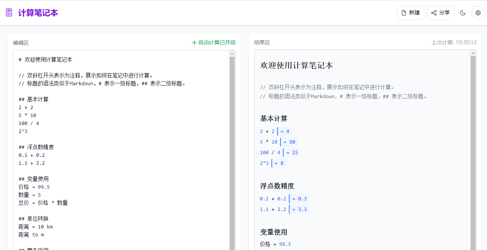
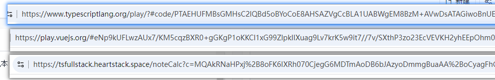
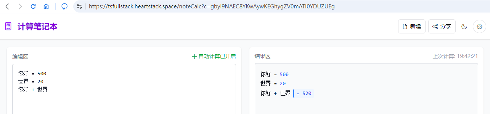
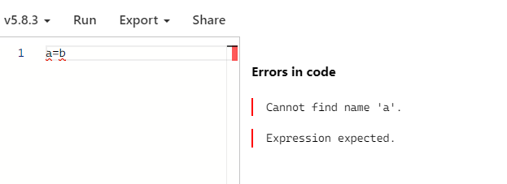
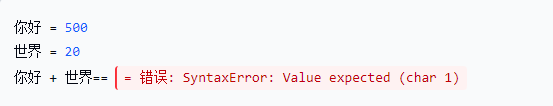

开发在线Playground的实践
最近在开发 NoteCalc ,他有一个类似 Playground 的界面

在这里记录一下我的实践
首先我们看一些常见的 playground 的网页，以 https://www.typescriptlang.org/play/ 和 https://play.vuejs.org/ 为例。
分享
毫无疑问，几乎所有的 playground 都具有分享功能。
另外不知道你们有没有注意到这些网页的地址栏，当你点击分享的时候他就变成了一长串，分享的数据就在这里面


实现这个功能有一个需要注意的点就是你的参数肯定要是url安全的这样你就基本只能使用base64，另外还应该足够的短（我借鉴 ts 选择了 lz-string 这个库来压缩字符长度）
操作界面和即时的反馈
最好就是要能够做到所见即所得，退而求其次就是分栏预览。
所见即所得的难度还是太高了，所以我经过一番尝试挣扎之后还是选择了分栏预览。
vue 和 ts 也是这样。
良好的错误信息显示
这是 ts 的错误信息显示界面

这是 vue 的错误信息显示界面

这是 NoteCalc 的错误信息显示界面

最佳实践就是要方便用户定位错误位置，如果有行号相关的数据的话最好就是标红线并且错误信息中提示行号。